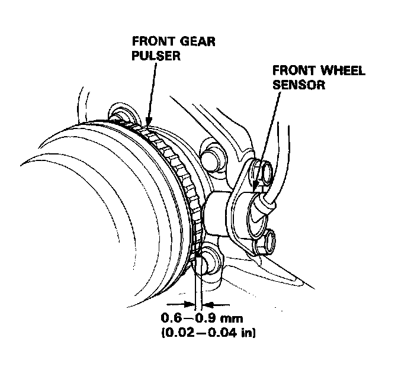
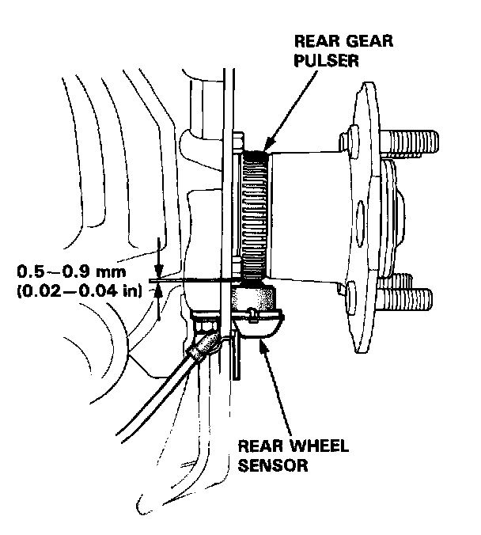

Component Inspection
Pulsers/Wheel Sensors Inspection
Front
1. Check the pulser for chipped or damaged teeth and replace if necessary.
2. Measure the air gap between the sensor and pulser all the way around while rotating the driveshaft by hand.
Standard: 0.6-0.9 mm (0.02-0.04 in)
NOTE: If the gap exceeds 0.9 mm (0.04 in) at any point, the probability is a distorted knuckle, which should be replaced.

Rear
1. Remove the rear caliper assembly.
2. Remove the rear brake disc.
3. Check the rear pulser for chipped or damaged teeth and replace if necessary.
4. Measure the air gap between the sensor and pulser all the way around while rotating the hub bearing unit by hand.
Standard: 0.5-0.9 mm (0.02-0.04 in)
NOTE: If the gap exceeds 0.9 mm (0.04 in) at any point, the probability is a distorted knuckle, which should be replaced.